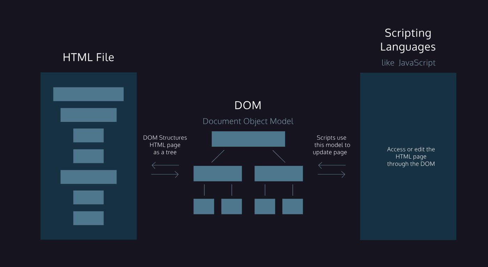

Codecademy Record 04
Building Interactive JavaScript Websites
Chapter 1: The Script Element
Let’s review.
- HTML creates the skeleton of a webpage, but JavaScript introduces interactivity
- The <script> element has an opening and closing tag. You can embed JavaScript code inbetween the opening and closing <script> tags.
- You link to external JavaScript files with the src attribute in the opening <script> tag.
- By default, scripts are loaded and executed as soon as the HTML parser encounters them in the HTML file. However, the parser waits to load the entire script before proceeding to parse the rest of the page elements.
- The defer attribute ensures that the entire HTML file has been parsed before the script is executed.
- The async attribute will allow the HTML parser to continue parsing as the script is being downloaded, but will execute immediately after it has been downloaded.
The old convention was to put scripts right before the </body> tag to prevent the script from blocking the rest of the HTML content. Now, the convention is to put the script tag in the <head> element and to use the defer and async attributes.
The Document Object Model, abbreviated DOM, is a powerful tree-like structure that allows programmers to conceptualize hierarchy and access the elements on a web page.
The DOM is one of the better-named acronyms in the field of Web Development. In fact, a useful way to understand what DOM does is by breaking down the acronym but out of order:
- The DOM is a logical tree-like Model that organizes a web page’s HTML Document as an Object.

Chapter 2: The Document Object Model
Congratulations on completing our introduction to the Document Object Model, or DOM, as a structure!
Let’s review what you’ve learned so far:
- The DOM is a structural model of a web page that allows for scripting languages to access that page.
- The system of organization in the DOM mimics the nesting structure of an HTML document.
- Elements nested within another are referred to as the children of that element. The element they are nested within is called the parent element of those elements.
- The DOM also allows access to the attributes of an HTML element such as style, id, etc.
With this understanding, you can begin to leverage the power of scripting languages to create, update, and maintain web pages!
Chapter 3: JavaScript and DOM
In this lesson, you manipulated a webpage structure by leveraging the Document Object Model (DOM) interface in JavaScript.
Let’s review what we learned:
• The document keyword grants access to the root of the DOM in JavaScript.
• The DOM Interface allows you to select a specific element with CSS selectors by using the .querySelector() method.
• You can access an element directly by its ID with the .getElementById() method which returns a single element.
• You can access an array of elements with the .getElementsByClassName() and .getElementsByTagName() methods, then call a single element by referencing its placement in the array.
• The .innerHTML and .style properties allow you to modify an element by changing its contents or style respectively.
• You can create, append, and remove elements by using the .createElement(), .appendChild(), and .removeChild() methods respectively.
• The .onclick property can add interactivity to a DOM element based on a click event.
• The .children property returns a list of an element’s children and the .parentNode property returns the element’s closest connected node in the direction towards the root.
Chapter 4
（DOM Events with JavaScript）
Congrats, you completed the lesson! Now you’ve learned about JavaScript events and you can leverage these events on the DOM to create interactivity with event handlers.
Let’s review what you’ve learned:
• You can register events to DOM elements using the addEventListener() method.
• The addEventListener() method takes two arguments: an event type and an event handler function.
• When an event is triggered on the event target, the registered event handler function executes.
• Event handler functions can also be registered as values of onevent properties of their event target.
• Event object properties like .target, .type, and .timeStamp are used to provide information about the event.
• The addEventListener() method can be used to add multiple event handler functions to a single event.
• The removeEventListener() method stops specific event handlers from “listening” for specific events firing.